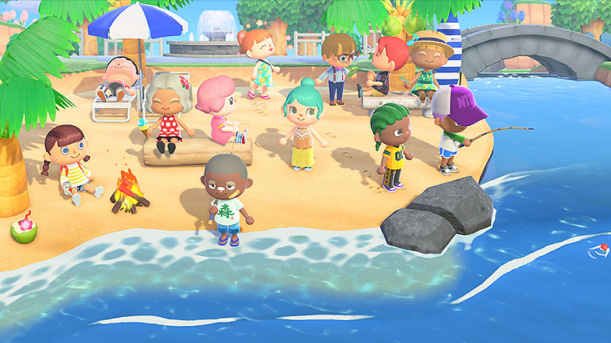

Loading...

Aunque durante años los videojuegos fueron vistos solo como entretenimiento, hoy también funcionan como herramientas de apoyo social y ayuda humanitaria en momentos de crisis. Gracias a internet y las comunidades digitales, millones de jugadores participan en campañas solidarias, eventos benéficos y espacios de convivencia que generan impacto positivo alrededor del mundo.
Durante la pandemia de COVID-19, juegos como Animal Crossing: New Horizons y Among Us ayudaron a muchas personas a mantenerse conectadas con amigos y familiares durante el confinamiento, reduciendo la sensación de aislamiento y estrés. Además, eventos como Games Done Quick han recaudado millones de dólares mediante transmisiones y maratones gamer para apoyar organizaciones humanitarias.
Empresas como Epic Games también han participado en campañas solidarias. Durante el conflicto entre Rusia y Ucrania, Fortnite reunió millones de dólares destinados a ayuda humanitaria a través de compras dentro del juego. Por otro lado, títulos como Minecraft y This War of Mine han sido utilizados para crear conciencia sobre temas como sostenibilidad, cambio climático y las consecuencias humanas de la guerra.
Aunque los videojuegos no resuelven por sí solos las crisis mundiales, sí tienen la capacidad de conectar personas, movilizar comunidades y crear redes de apoyo emocional y económico. Esto demuestra que la industria gamer también puede convertirse en una herramienta de responsabilidad social y solidaridad.